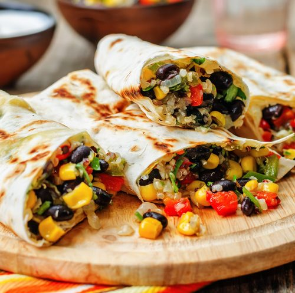

1. Falafel
Ingledientes
Para 2 personas
Garbanzos ......................................................................................................... 240 g
Rebanadas de pan(preferiblemente integral) ..................................... 2
Cebolla ................................................................................................................ 50 g
Dientes de ajo .................................................................................................. 2
Cucharadita de comino ................................................................................ 1
Cucharadita de pimenton ........................................................................... 1/2
Manojo de ciclantro fresco ......................................................................... 1
Manojo de perejil fresco .............................................................................. 1
Aceite de oliva extra virgen ......................................................................... 30 ml
Cucharadita de levadura (preferiblemente de panadero) .............. 1
Agua ........................................................................................................... (opcional)
Como hacer Falafel
Dificultad: Facil
Tiempo total .............. 35 m
Elaboracion ............ 10 m
Cocción ............ 15 m
Reposo ............ 10 m
Lavar los garbanzos escurridos y triturar todos los ingredientes en el robot Magimix Cook Expert o robot de cocina, ajustando la textura con agua si fuera necesario. Tomamos pequeñas porciones de la masa y formamos bolitas de igual tamaño. Conviene humedecerse las manos para que la masa no se nos pegue. Las colocamos sobre una bandeja de horno cubierta con papel sulfurizado y aplastamos ligeramente con las manos. Dejamos reposar una hora en la nevera o en una zona fría de la cocina. Cocemos en horno pre calentado a 180ºC, arriba y abajo con calor tradicional, durante unos 20 minutos o hasta que estén dorados. Volteamos cada uno a media cocción, es decir, después de los primeros 10 minutos. Retiramos del horno y servimos inmediatamente.
2. Curry de garbanzo con mango
Ingledientes
Para 2 personas
Garbanzos cocidos .......................................................................................... 300 g
Dientes de ajo ................................................................................................... 2
Cebolla ................................................................................................................ 1
Cilantro en grano ............................................................................................. 2 g
Comino en grano ............................................................................................. 2 g
Hoja de corry o Laurel ................................................................................... 1
Guindillas frescas ............................................................................................. 2
Puerro pequeño ............................................................................................... 1
Zanahoria ............................................................................................................ 1
Apio ....................................................................................................................... 1
Mazcla de curry molido ................................................................................. 5 g
Mango maduro ................................................................................................ 1
Leche de coco ................................................................................................... 200 g
Jugo de limon ................................................................................................... 5 ml
Perejil fresco o cilantro
Pminienta negra y sal
Aceite de oliva
Como hacer Curry de garbanzo
Dificultad: Dificil
Tiempo total .............. 35 m
Elaboracion ............ 10 m
Cocción ............ 15 m
Reposo ............ 10 m
Picar muy finos los ajos, el jengibre pelado y la cebolleta. Lavar y picar las verduras, o cortar en bastones. Sacar la pulpa del mango y triturar con sus jugos para que quede cremosa. Calentar aceite en sartén o cazuela con el comino, cilantro y las hojas de curry o laurel, hasta que suelten su aroma. Añadir la pasta de ajo y cebolleta y remover bien a fuego suave durante unos 8-10 minutos. Incorporar las verduras. Salpimentar ligeramente y agregar la mezcla de curry. Saltear a fuego medio durante 5 minutos y echar la pulpa de mango, la leche de coco y remover bien. Llevar a ebullición, bajar el fuego y tapar. Cocinar el conjunto unos 10 minutos. Añadir los garbanzos y volver a tapar. Cocinar a fuego suave durante unos 10 minutos más, ajustando la cantidad de líquido con agua o caldo. Añadir al final zumo de limón y corregir el punto de sal. Servir con perejil o cilantro fresco.
3. Burrito vegano
Ingledientes
Para 2 personas
Alubias negras ................................................................................................. 250 g
Hoja de laurel ................................................................................................... 1
Chile molido ..................................................................................................... 5 g
Acite de girasol ............................................................................................... 10 ml
Cebolla ............................................................................................................... 1
Morron rojo ...................................................................................................... 1
Morron verde ................................................................................................... 2
Aceite de oliva extra virgen ........................................................................ 5 ml
Sal de ajo ............................................................................................................ 3 g
Tortillas de trigo ............................................................................................... 4
Sal
Como hacer Burrito vegano
Dificultad: Facil
Tiempo total .............. 35 m
Elaboracion ............ 10 m
Cocción ............ 15 m
Reposo ............ 10 m
Lavamos las alubias y las ponemos en una olla a presión cubiertas con agua y el laurel. Cocemos en la posición 2 durante 30 minutos. Se pueden poner en remojo la noche anterior, lo que aceleraría el tiempo de cocción. Queremos que queden tiernas. Escurrimos y reservamos el líquido sobrante. Calentamos el aceite en una cacerola, agregamos la mitad del chile, las alubias y sazonamos. Removemos y aplastamos con un tenedor. Incorporamos parte del líquido reservado hasta obtener un puré suave pero compacto. Para el relleno, pelamos la cebolla y la cortamos en juliana. Lavamos los pimientos, retiramos el pedúnculo y las semillas, cortamos por la mitad y retiramos los filamentos. Cortamos en juliana gruesa. En una sartén con aceite las salteamos a fuego medio-alto y retiramos. Limpiamos la sartén con papel y calentamos ligeramente las tortillas de trigo. Extendemos una capa de frijoles en cada tortilla y encima las verduras. Cerramos las tortillas, doblando dos extremos opuestos y a continuación, doblando los otros dos lados sobre estos, a modo de sobre. Tostamos ligeramente por ambos lados, en la sartén y los servimos inmediatamente.
4. Hamburguesa de palta y quinoa
Ingledientes
Para 5 personas
Palta madura ...................................................................................................... 2-3
Quinoa cocida ................................................................................................... 160 g
Cebolla morada ................................................................................................ 150 g
Media lima .......................................................................................................... 2
Aji picante verde .............................................................................................. 2
Cilantro fresco ................................................................................................... 50 g
Cucharadita de ajo granulado ..................................................................... 1
Pan rallado .......................................................................................................... 150 g
Aceite de oliva extra virgen
Pimienta negra
Sal
Como hacer Hamburguesa
Dificultad: Media
Tiempo total .............. 35 m
Elaboracion ............ 10 m
Cocción ............ 15 m
Reposo ............ 10 m
Cortamos el aguacate por la mitad y sacamos la carne. Picamos la cebolla. Lavamos las hojas de cilantro, secamos y picamos. Lavamos el pimiento verde picante, retiramos el pedúnculo y las semillas y picamos finamente. Mezclamos todos los ingredientes en un cuenco. Añadimos la quinoa cocida, el ajo granulado, el pan rallado, la ralladura de la media lima y su zumo y salpimentamos. Removemos bien hasta obtener una masa homogénea y espesa. Podemos añadir más pan rallado si la notamos demasiado blanda, poco a poco y con cuidado. Dividimos la masa en ocho porciones, les damos forma de mini hamburguesa y empanamos. Freímos en una sartén con un poco de aceite de oliva bien caliente. Volteamos para que se hagan por las dos caras y, cuando estén doradas, las retiramos. Montamos las mini hamburguesas al gusto.
5. Tacos veganos de garbanzo y soja
Ingledientes
Para 3-4 personas
Comino molido ................................................................................................ 5 g
Diente de ajo ..................................................................................................... 1
Cebolla morada ................................................................................................ 1
Pimenton dulce ................................................................................................ 5 g
Canela molida .................................................................................................... 2 g
Oregano ............................................................................................................... 5 g
Cile chipotle en abodo .................................................................................. 1
Tomate troceado natural .............................................................................. 400 g
Garbanzos cocidos .......................................................................................... 400 g
Taza de soja texturizada fina ....................................................................... 1/3
Aceite de oliva extra virgen
Caldo de verdura
Pimienta negra
Sal
Pizca de azucar
Como hacer Tacos de garbanzo y soja
Dificultad: Media
Tiempo total .............. 35 m
Elaboracion ............ 10 m
Cocción ............ 15 m
Reposo ............ 10 m
Cortamos el aguacate por la mitad y sacamos la carne. Picamos la cebolla. Lavamos las hojas de cilantro, secamos y picamos. Lavamos el pimiento verde picante, retiramos el pedúnculo y las semillas y picamos finamente. Mezclamos todos los ingredientes en un cuenco. Añadimos la quinoa cocida, el ajo granulado, el pan rallado, la ralladura de la media lima y su zumo y salpimentamos. Removemos bien hasta obtener una masa homogénea y espesa. Podemos añadir más pan rallado si la notamos demasiado blanda, poco a poco y con cuidado. Dividimos la masa en ocho porciones, les damos forma de mini hamburguesa y empanamos. Freímos en una sartén con un poco de aceite de oliva bien caliente. Volteamos para que se hagan por las dos caras y, cuando estén doradas, las retiramos. Montamos las mini hamburguesas al gusto.